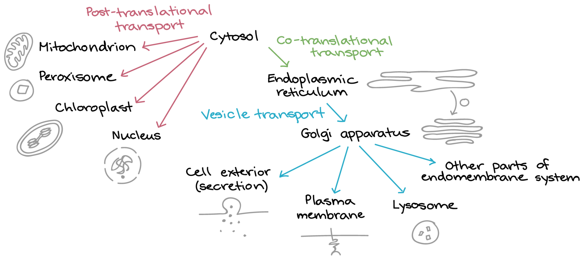

I think the concept they’re testing is the increased TBG levels in pregnancy, and not just hyperthyroidism in general.
When screening for hypo/hyperthyroidism, TSH levels are ALWAYS preferentially checked because they are more sensitive to minute differences in T3/T4. Often times TSH levels can demonstrate a change even when T3/T4 levels are in the subclinical range. The only exception to this would be in pregnancy (and I guess maybe liver failure? I doubt they would ask this though). High estrogen levels prevents the liver from breaking down TBG, leading to increased TBG levels in the serum. This binds to free T4, decreasing the amount of available free T4. As a compensatory mechanism, TSH levels are transiently increased and the RATE of T4 production is increased to replenish baseline free T4 levels. However the TOTAL amount of T4 is increased.
The question is asking how to confirm hyperthyroidism in a pregnant woman --> you need to check FREE T4 levels (because they should be normal due to compensatory response). You cannot check TSH (usually elevated in pregnancy to compensate for increased TBG), and you cannot check total T4 levels (will be increased). You got the answer right either way but I think this is a different reasoning worth considering, because they can ask this concept in other contexts of hyper-estrogenism, and if they listed “TSH” as an answer choice that would be incorrect.
Bruh let me tell you a lil secret
PEEP prevents Atelectasis AKA dat LUNG COLLAPSE
Dont be worryin about random words they puts in front of the HIGH YIELD ones
The synthesis of virtually all proteins (mRNA->peptide) occurs in the cytoplasm.[1] That’s where all ribosomes reside, after all. Ribosomes, which are mostly just rRNA (~2/3 rRNA + 1/3 protein*, by weight), are assembled in the nucleus but only do their stuff once they get to the cytoplasm.
For a protein to leave its original hometown of the cytosol and become a resident of the nucleus or, sayyyyyy, the endoplasmic reticulum, it needs to have a little string of amino acids which shout “I belong in the nucleus!” or “I belong in the endoplasmic reticulum!”
Proteins ultimately destined for the ER contain an unimaginatively named string of amino acids known as “signal sequence,” which, for the purposes of the Step 1, is always at the N-terminus. The signal sequence tells other cytosolic proteins, “Hey! Take me (and the rest of the peptide of which I am part) to the ER!”
In the absence of this signal, a protein will remain in its “default” home of the cytosol.
Here’s a nice schematic showing the flow of proteins from initial synthesis to final destinations:

Endnotes
*If you really want your mind blown, consider that even the protein subunits that make up that 1/3 of a ribosome are themselves initially synthesized in the cytosol; later, they are transported back into the nucleus via the nuclear pore.
! I hate these with a burning F***ing passion. Thumbs up if you agree
https://www.youtube.com/watch?v=4-DuvwoH2zQ if ur lazy like me, this is a good refresher video
the majority of carbon dioxide molecules are carried as part of the bicarbonate buffer system. In this system, carbon dioxide diffuses into the RBCs. Carbonic anhydrase (CA) within RBCs quickly converts the carbon dioxide into carbonic acid (H2CO3). Carbonic acid is an unstable intermediate molecule that immediately dissociates into bicarbonate ions (HCO3-) and hydrogen (H+) ions.
The newly synthesized bicarbonate ion is transported out of the RBC into the plasma in exchange for a chloride ion (Cl−); this is called the chloride shift. When the blood reaches the lungs, the bicarbonate ion is transported back into the RBC in exchange for the chloride ion. The H+ ion dissociates from the hemoglobin and binds to the bicarbonate ion. This produces the carbonic acid intermediate, which is converted back into carbon dioxide through the enzymatic action of CA. The carbon dioxide produced is expelled through the lungs during exhalation.
Usual interstitial pneumonitis is the histological definition of Idiopathic pulmonary fibrosis. We know that this patient has pulmonary fibrosis because the question states that there is fibrous thickening of the alveolar septa. This question was just testing that we knew the other names for Pulmonary Fibrosis.
why hemolysis is wrong:
There should almost never be straight up bilirubin in the urine. In hemolysis, the excess bilirubin is excreted in the bile. After bacterial conversion and reuptake, some will be excreted in the urine as urobilin. However, in obstructive disorders, the conjugated bilirubin will never have the opportunity to undergo bacterial conversion to sterco/urobilin. In this way, the conjugated bilirubin has no other way to be excreted other than directly in the urine.
credits to /u/alacran763 on reddit
Hydrochlorothiazide is a thiazide diuretic => thiazide diuretics are associated with hypokalemia.
What other diuretics are associated with hypokalemia? Loop diuretics.
Why?
Inhibition of Na+ reabsorption occurs in both loop diuretics (inhibit NKCC cotransporter) and thiazide diuretics (inhibit NaCl cortransporter). All of this increased Na+ increases Aldosterone activity.
Relevant to this problem, Aldosterone upregulates expression of the Na+/K+ ATP antiporter (reabsorb Na+ into body, expel K+ into lumen). This results in hypokalemia in the body.
Hang on, there's more high yield info!
Aldosterone does one other important thing - activation of a H+ channel that expels H+ into the lumen.
So, given that this patient has hypokalemia, you know there is upregulation of Aldosterone. Do you think her pH would be high, or low? Exactly, it would be high because inc. Aldosterone => inc. H+ expelled into the lumen => metabolic akalosis.
Now you understand why both loop diuretics and thiazide diuretics can cause what's called "hypokalemic metabolic alkalosis."
In the great words of Dr Sattar:
"Prostaglandin E2 mediates feeeeeeeeeever"
NSAIDs --> block prostaglandin syn
It’s an osteosarcoma. Sarcoma = hematogenous mets. It’s in the legs so think how a DVT goes to lung. Same idea.
when diff single strand repair mechanisms are used:
Fats are ketogenic (except odd chain FA), so they produce ketones for energy production (Acetyl-CoA) rather than glucose. If the question asked what the primary source of energy production was, it would still be glycogen (and not ketones), because this is within 24 hours. However after 24 hours the answer could be ketone bodies. Regardless, the question specifically said the pt had a serum glucose of 100, indicating that we are looking for something that provides a substrate for gluconeogenesis.
During periods of starvation, substrates for gluconeogenesis come from two sources: (1) breakdown of existing muscle, or (2) via odd-chain FA through propionyl-CoA. (*Valine also feeds into propionyl CoA, but is not involved during starvation --> see below)
(1) The alanine-pyruvate cycle provides this (glutamine in muscle + pyruvate --> alanine --> goes to liver --> transamination to alpha-ketoglutorate --> pyruvate is separated from glutamine --> glutamine goes to urea cycle, pyruvate goes on to gluconeogenesis). Lactate can also be used (this could have been a right answer if it were listed).
(2) Odd chain FAs are also glucogenic, but stearic acid (provided in the answer choice) isn’t odd chain, so it is only ketogenic and can be ruled out.
Although valine (and other branched a.a.) feed into Propionyl-CoA, they are not used in starvation because starvation strictly relies on hepatic gluconeogenesis. These a.a. are not metabolized in the liver because the liver lacks branched-chain a.a. transferase enzyme. In First Aid, Biochem section, under Fasting/Starvation, in both the “fasting state” (which is within the time frame of this question), or the “starvation state,” both utilize hepatic gluconeogenesis. My assumption is that valine is used during regular metabolism, and not during periods of starvation.
• Per Protocol - Only include patients in the results who followed the protocol
• As treated - Data wise, only treat the subjects as they were treated (ex - if experimental patient does what the control patients are supposed to do, move that experimental patient to the control group
• Intention to treat - Include all patients in the groups they were originally randomized to
Know your STD's baby ;-) (going through every other choice on this question):
Bacterial vaginosis caused by gardnerella vaginallis. Se a thin, off white discharge and fishy smell (fish in the garden). There's no inflammation Lab findings: pH greater than 4.5 (just like trichomoniasis), and a positive whiff test with KOH. Stem will say something about malodorous discharge and show the infamous CLUE CELLS if we are lucky. Not the answer for this question obviously because we would not expect vesicles with this bacterial disease.
Candidiasis is going to be your thick cottage cheese discharge, with inflammation. normal pH see pseudohyphae. Treat with topical nystatin, or oral fluconazole unless you're pregnant than use Clotrimazole. Again not going to see any vesicles.
Chancroid per uworld is associated with Haemophilus ducreyi you will have a Deep purulent painful ulcer with suppurative lymphadenitis. Will be told that patient has painful inguinal nodes, there may be multiple deep ulcers with gray-yellow exudate. You do cry with H. duCRYi This wouldn't be true for what our patient has in this question because we aren't told of any inguinal adenopathy. a link to a chancroid VDA
Chlamydia trachomatis causes lymphogranuloma venereum which is small shallow ulcers, painless, but then the large painful coalesced inguinal lymph nodes aka BUBOES. Compared with gonnorhea the discharge is more thinner and watery. Again not the case here as its painful and no mention of any BUBOOESS. The discharge in gonorrhea is more thicker. Both lead to PID, treat for both because confection is common. With both patient may have some sort of pain or burning sensation upon urination. Sterile pyuria though for both.
Condyloma accuminatum is a manifestation of HPV 6 + 11 (genital warts). They look like big cauliflowers. This is in contrast to Condyloma lata that you see in syphillis which is just a flatter latte brown looking macule.
Genital Herpes (the answer to the question) will present with multiple painful superficial vesicles or ulcerations with constitutional symptoms (fever, malaise) Just fits better than all the other choices I ran through.
Syphillis is the painless chancre. UW describes it as a single, indurated well circumscribed ulcer, with a clean base. See corkscrew organisms on DF microscopy. Keep in mind other painless ulcers are lymphogranuloma venereum of clamydia (but the buboes are whats painful not the ulcer), and granuloma inguinale (donovanosis - klebsiella granulomatis) but whats hallmark about this one is that its painless without lymphadenopathy
In short, be safe.
Maturation (remodeling): During maturation and remodeling,
The question is asking you how much water must the woman take in to maintain the same osmolality. This woman takes in 450 mOsm of solute per day. This is a unit of measurement -- think of it like grams.
For her to keep the same osmolality she must excrete 450 mOsm per day. The only way for her to excrete the solute is via the kidneys. The only way for her kidneys to excrete 450 mOsm is if they excrete 1 liter of water also. This is the max concentration that her kidneys can produce. (Her kidneys are not “powerful enough” to make her urine any more concentrated than that.)
This woman is also losing another liter of water to feces, sweating and respiration. This is the “insensible water loss”. That means if she losing 1 liter of water to sweat, respiration and feces per day plus 1 liter of water to urine (because she needs to dissolve her solute in something!), for her blood to stay the same osmolality, she must replace the water she lost thus must, at minimum, drink 2 liters of water per day.
This is a pretty good figure showing the conversion of membrane phospholipids to arachidonic acid/leukotrienes etc.
Blockade of COX enzyme by ibuprofen results in decreased production of prostaglandins H2 and E2, while causing the precursors to "back up" (increased arachidonic acid). This, in turn, results in increased production of leukotrienes.
2,500 students ... but you find out during your initial screen that 500 already have the disease. So, strikeout those people. That leaves 2,000 students who don’t have the disease.
Over the course of 1 year, you discover 200 students developed the infection. Thus:
200 new cases / 2,000 people who didn’t have the disease when you started your study = 10 percent
Tricky, tricky NBME ...
Candida is a part of the normal flora of skin, could cause contamination of a central venous catheter. The question states that the organism is purple, budding, did not respond to broad spectrum antibiotics (aka they didn't use fluconazole or amphotericin B). Lastly, they showed it plated on blood agar and there was no hemolysis which eliminates staph (the only other possible contender here.)
Cryptococcus usually involves meningitis in immunocompromised pts. E. coli is gram negative sporothrix is usually transmitted by a thorn on a rose or someone with a history of gardening
This video explains genital embryology extremely well.
If you felt totally lost like me, watch the video first at 2x, then check out the bottom figure on pg. 608 in FA 2019.
Relevant to this question:
Quiz yourself (answers in a separate post):
Orchiectomy = ↓ testosterone production = ↓ DHT => prostate cells undergo apoptosis. (This mechanism is similar to using 5α-reductase blockers to treat BPH.)
Apoptosis is characterized by DNA fragmentation (pyknosis, karyorrhexis, karyolysis).
The thyroid is supplied with arterial blood from the superior thyroid artery, a branch of the external carotid artery, and the inferior thyroid artery, a branch of the thyrocervical trunk.
I might be the only person on earth who got this one wrong, but regardless:
"ITT analysis includes every subject who is randomized according to randomized treatment assignment. It ignores noncompliance, protocol deviations, withdrawal, and anything that happens after randomization."[1]
Capsular polysaccharide vaccines are often conjugated to proteins to improve immunogenicity. Flagellin is the only answer choice that's a protein.
{kind=link}
{kind=link}
{kind=link}
{kind=link}
A 24-year-old woman with sickle cell disease comes to the ...
Serum parvovirus B19 IgM antibody test